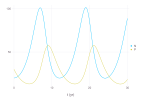
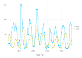

Predator–Prey Model
This tutorial preserves the Lotka–Volterra predator–prey example used in the original Cropbox manual. It is not a crop model, but it is a compact way to learn two patterns that occur throughout crop modeling: several states changing together and a base process being extended without copying the whole specification.
Start from the Lotka–Volterra equations
Let prey population $N$ and predator population $P$ follow
\[\frac{dN}{dt} = bN - aNP, \qquad \frac{dP}{dt} = caNP - mP.\]
The parameters $b$, $a$, $c$, and $m$ remain fixed during one run. Both populations are accumulated states, and each rate depends on the current value of both states.
| Symbol | Meaning | Cropbox role |
|---|---|---|
| $b$ | prey birth rate | configurable preserved value |
| $a$ | predation rate | configurable preserved value |
| $c$ | conversion efficiency | configurable preserved value |
| $m$ | predator mortality rate | configurable preserved value |
| $N$, $P$ | current populations | coupled accumulated states |
Declare a reusable process
using Cropbox
using CSV
using DataFrames
@system PredatorPrey begin
t(context.clock.time): elapsed_time ~ track(u"yr")
b: prey_birth_rate => 0.6 ~ preserve(parameter, u"yr^-1")
a: predation_rate => 0.02 ~ preserve(parameter, u"yr^-1")
c: conversion_efficiency => 0.5 ~ preserve(parameter)
m: predator_mortality_rate => 0.5 ~ preserve(parameter, u"yr^-1")
N0: prey_initial_population => 20 ~ preserve(parameter)
P0: predator_initial_population => 30 ~ preserve(parameter)
N(N, P, b, a): prey_population => b * N - a * N * P ~ accumulate(init = N0)
P(N, P, c, a, m): predator_population => c * a * N * P - m * P ~ accumulate(init = P0)
end
@system LotkaVolterra(PredatorPrey, Controller)Main.LotkaVolterraN and P appear in their own dependency lists. This recurrence is valid for an accumulated state: the previous stored value participates in the rate used for the next update. An ordinary track cycle would have no valid evaluation order and would be rejected.
The init tags are explicit because zero populations would remain at the trivial zero solution. The process omits Controller so it can be reused; the executable root adds the controller once.
Configure and simulate
Use a daily update even though rates and plotted time are expressed per year. Cropbox converts compatible units during accumulation.
config = @config (
PredatorPrey => (
b = 0.6,
a = 0.02,
c = 0.5,
m = 0.5,
N0 = 20,
P0 = 30,
),
Clock => :step => 1u"d",
)
classic = simulate(LotkaVolterra;
config,
stop = 30u"yr",
snap = 30u"d",
index = :t,
target = [:N, :P],
)
last(classic, 3)| Row | t | N | P |
|---|---|---|---|
| Quantity… | Float64 | Float64 | |
| 1 | 29.8152 yr | 85.3299 | 17.3412 |
| 2 | 29.8973 yr | 87.0867 | 17.864 |
| 3 | 29.9795 yr | 88.8004 | 18.4288 |
visualize(classic, :t, [:N, :P]; kind = :line)
The trajectories should be read together: prey growth supports a later predator increase, which then suppresses prey and is followed by predator decline. A time step that is too coarse can change the phase and amplitude, so check numerical convergence before interpreting parameters biologically.
Add density dependence with a mixin
A prey carrying capacity $K$ changes the first equation to
\[\frac{dN}{dt} = bN\left(1-\frac{N}{K}\right)-aNP.\]
Reuse the original process and replace only N:
@system DensityDependent(PredatorPrey, Controller) begin
K: prey_carrying_capacity => 1000 ~ preserve(parameter)
N(N, P, K, b, a): prey_population =>
b * N * (1 - N / K) - a * N * P ~ accumulate(init = N0)
end
density_config = @config config + (
DensityDependent => :K => 1000,
)
bounded = simulate(DensityDependent;
config = density_config,
stop = 30u"yr",
snap = 30u"d",
index = :t,
target = [:N, :P],
)
last(bounded, 3)| Row | t | N | P |
|---|---|---|---|
| Quantity… | Float64 | Float64 | |
| 1 | 29.8152 yr | 68.4447 | 18.7205 |
| 2 | 29.8973 yr | 69.472 | 19.014 |
| 3 | 29.9795 yr | 70.476 | 19.3282 |
Because later declarations take precedence, the new N replaces the one from PredatorPrey; the remaining parameters and predator equation are reused. Compare the two configurations with the same time step, stop rule, initial values, and output layout.
Connect observations
The original tutorial used the historical Hudson Bay hare and lynx pelt series. The source pelts.csv remains with this manual. unitfy reads the unit annotation in Year (yr) and removes it from the column name.
pelts = CSV.read(
"pelts.csv",
DataFrame,
) |> unitfy
first(pelts, 3)| Row | Year | Hare | Lynx |
|---|---|---|---|
| Quantity… | Float64 | Float64 | |
| 1 | 1845 yr | 19.58 | 30.09 |
| 2 | 1846 yr | 19.6 | 45.15 |
| 3 | 1847 yr | 19.61 | 49.15 |
visualize(pelts, :Year, [:Hare, :Lynx]; kind = :scatterline)
Pelt counts are an observation proxy rather than direct population censuses. That distinction, the unknown scaling between series, and the time interval chosen for fitting must be part of the model interpretation.
Calibrate and evaluate responsibly
Normalize the observation index to elapsed time, choose defensible bounds, and fit only a training interval. A calibration template is:
observations = transform(
pelts,
:Year => (year -> year .- first(year)) => :t,
)
fitted = calibrate(LotkaVolterra, observations;
config,
index = :t,
target = [:Hare => :N, :Lynx => :P],
parameters = PredatorPrey => (
b = (0, 2),
a = (0, 2),
c = (0, 2),
m = (0, 2),
N0 = (0, 200),
P0 = (0, 200),
),
stop = last(observations.t),
metric = :rmse,
optim = (MaxSteps = 1000,),
)calibrate reads the declared unit of each parameter. The plain bound b = (0, 2) is therefore interpreted in u"yr^-1" because b was declared with that unit. If an explicit quantity is useful, [0, 2]u"yr^-1" is a valid equivalent range container; multiplying a tuple as (0, 2)u"yr^-1" is not valid Julia syntax. Explicit compatible units are most useful when the search interval is naturally expressed on a different time scale.
For the density-dependent model, add a bounded K parameter and compare both models on held-out years rather than judging only their calibration error. Retain the time step, bounds, metric, optimizer options, and package versions. See Evaluate and Calibrate Models for multi-target and multi-environment workflows.